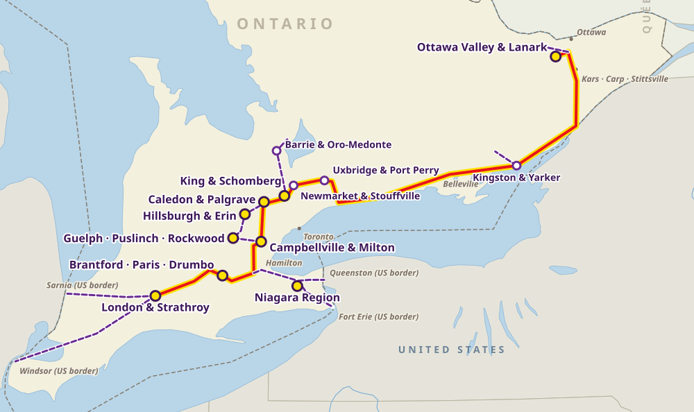

Ontario
Horse transport in Ontario
From London and the Golden Horseshoe to Caledon, King Township and the Ottawa Valley, Nexa Horse Transport connects Ontario’s horse communities along Highway 401 and beyond.
Our routes in Ontario

- Main horse communities
- Regional communities
- Main route
- Branch route
Southwestern corridor (Highway 401 and 402)
- London and Strathroy: standardbred racing, thoroughbred breeding and boarding
- Brantford, Paris and Drumbo: western, clinic and boarding barns
Golden Horseshoe and Niagara
- Niagara Region: Smithville, Pelham, Vineland
- Campbellville and Milton: boarding, standardbred racing, show venues
- Guelph, Puslinch and Rockwood: veterinary referral, breeding, sport horses
- Hillsburgh and Erin: breeding farms and training centres
GTA and Headwaters (Highway 400, 404 and 9)
- Caledon and Palgrave: performance barns and competition venues
- King Township and Schomberg: hunter/jumper and dressage
- Newmarket and Whitchurch-Stouffville: show barns, standardbreds
- Uxbridge and Port Perry: boarding, breeding, trails
Central and eastern corridor
- Barrie and Oro-Medonte: recreational, eventing and boarding
- Kingston and Yarker: mid-route stop on Highway 401
- Ottawa Valley and Lanark County: Stittsville, Kars, Carp
Transport routes
Main route, west to east
London → Brantford → Milton / Guelph → Caledon / King → Uxbridge → Kingston → Ottawa Valley
Highway 401 east, then Highway 416 north to Ottawa · about 650–700 km
Niagara spur
Milton / Hamilton → Smithville / Pelham → Fort Erie / Queenston (US border)
Highway 403 and QEW · about 100–130 km from Milton
Northern spur
King Township → Barrie / Oro-Medonte
Highway 400 north · about 65–85 km from King
Good to know
Barn to barn
Boarding barns, show venues and breeding farms across southern Ontario. Send us the exact addresses.
Busy highways
We plan around 401 traffic and give horses quiet rest and water stops.
To and from the USA
Cross-border trips through Niagara, Sarnia and Windsor, always starting or ending in Canada.
Preparing for transport
Tell us the number of horses, their size, loading experience and any vet or handling needs.
The booking form is a request for an estimate. Nothing is confirmed until we call or email you.
Explore our other transport services
Alberta · British Columbia · Saskatchewan · Manitoba · Québec · New Brunswick · Nova Scotia · Coast to coast · Long-distance across Canada
For a specific journey, request an estimate or call 1-844-491-NEXA.